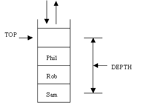

Stacks as an Abstract Data Type
Stacks as an Abstract Data Type
Stacks are one of the most common structures used in computing.
It is a LIFO (Last In, First Out) structure which means that the first item added (pushed) on to the stack is the last to be removed (popped). This is shown in the following:

In the example above, we have added the following names to the stack
Assume that we have a definition:
Stack myStack;
then
myStack.push("Sam")
myStack.push("Rob")
myStack.push("Phil")
will give the state shown above.
Assuming that we now do the following: We will get:
System.out.println(myStack.pop()); Phil
System.out.println(myStack.pop()); Rob
System.out.println(myStack.pop()); Sam
Note: the order is very important.! Stacks reverse things!
What operations should we provide?
push(…) - to add an item onto the stack
pop() - to remove an item from the stack (and pass it back to user)
topOf() - to show the user what is on the top of the stack
depth() - pass back the depth of the stack
But what about
equals() and clone() which are provided as default for Object
We will provide equals() but not clone()
package aber.util;
import java.io.*;
import aber.util.TextInputReader;
import aber.util.TextIOException;
/**
* Stack provides a full abstraction of the Stack data structure
* @author Mark Ratcliffe
* @version First written 22 January 1998
*/
public class Stack implements Serializable
{
/**
* maxSizeOfStack is prespecified size of Stack
*/
public int maxSizeOfStack = 10;
// current number of Objects in array
private int currentDepth = 0;
private Object[] theItems; // Declare but don't define
/**
* default constructor sets Stack to pre-specified size
*/
public Stack ()
{
// define size of array
theItems = new Object[maxSizeOfStack];
}
/**
* User is required to specify maximum depth of stack
* @param numOfItems maximum size of stack
*/
public Stack (int numOfItems)
{
// set maxSizeOfStack to numOfItems
maxSizeOfStack = numOfItems;
// define size of array
theItems = new Object[maxSizeOfStack];
}
/**
* Informs user how many items are on the stack
* @return int the depth of the stack
*/
public int getDepth()
{
// currentDepth always contains the correct number of items
// don't forget that the array starts at 0
return currentDepth;
}
/**
* push enables a user to add a new item on to the stack
* @param newItem the object to be added to top of stack
* @exception java.lang.Exception thrown if stack is
* already full then an Exception is raised
*/
public void push(Object newItem) throws Exception
{
// Check that we have space in array
if (currentDepth == maxSizeOfStack)
{
throw new Exception("Stack too full!");
}
// NOTE: we keep reference to the object - not a clone
theItems[currentDepth] = newItem;
// increment the index ready for next time
currentDepth++;
}
/**
* pop passes back object at the top of the stack
* @param Object item removed from the top of the stack
* @exception java.lang.Exception
* - if the stack is empty an Exception will be raised
*/
public Object pop() throws Exception
{
Object tmp;
if (currentDepth == 0)
{
throw new Exception("Tried to pop an empty stack");
}
// first decrement counter (cos our first index is at 0)
currentDepth--;
// save object reference in temporary location
tmp = theItems[currentDepth];
// set the array reference to null
theItems[currentDepth] = null;
// now pass the value back to the user
return tmp;
}
/**
* Returns a reference to object at top of stack
* - it does not remove the item from the stack
* @return Object the item currently at top of stack
* @exception java.lang.Exception thrown if stack empty
* an Exception will be raised
*/
public Object topOf() throws Exception
{
if (currentDepth == 0)
{
throw new Exception("Tried to get top of empty stack");
}
// now pass the value back to the user
return theItems[currentDepth-1];
}
/**
* Calls toString on every object is the stack
*/
public void display()
{
// we start at the top and work down the stack
for (int count = currentDepth-1; count>=0 ; count--)
{
// calls toString on current item
System.out.println(theItems[count]);
}
}
/**
* Returns true if contents of stack (& size) are equal.
* Object references are compared, not their contents
* @param other the stack to be compared with
* @return boolean true if stacks contain same objects, in order
*
*/
public boolean equals(Stack other)
{
if (this.currentDepth != other.currentDepth)
{
return false;
}
for (int i=0; i<this.currentDepth; i++)
{
if (this.theItems[i] != other.theItems[i])
{
return false;
}
}
// Got this far so stacks are equal
return true;
}
/**
* main - a simple test harness to ensure stack works OK
* @exception java.lang.Exception
* - raised if an error occurs on input
*/
public static void main (String [] args)
throws TextIOException, Exception
{
final int maxItems=10;
Stack myStack = new Stack(maxItems);
Stack otherStack = new Stack(maxItems);
String theName;
TextInputReader t = new TextInputReader();
for (int count = 0; count < maxItems; count++)
{
theName = t.promptForString("Enter name");
myStack.push(theName);
otherStack.push(theName);
}
myStack.display();
// Two stacks should be equal so let's test
if (!myStack.equals(otherStack))
{
System.out.println("Error in equals - stacks are equal");
}
else
{
System.out.println("Equals ok on equal stacks");
}
while (myStack.getDepth() != 0)
{
System.out.println(myStack.topOf() + "\t is at top");
System.out.println(myStack.pop() + "\t has been removed");
}
// Two stacks should not be equal so let's test
if (myStack.equals(otherStack))
{
System.out.println("Error in equals - stacks are unequal");
}
else
{
System.out.println("Equals ok on unequal stacks");
}
}
}
Our stack has been written in terms of Object. As Object is the class at the root of any class hierarchy, this means that any ‘object’ can be stored on our stack.
In the example above, we stored Strings on to the stack, but what if we wanted to store Modules on the stack?
The only modification we would need is to cast our Object, returned from Pop, into a Module:
import aber.util.TextInputReader;
import aber.util.TextIOException;
import aber.util.Stack;
/**
* A class to test the Stack class
* @author Mark Ratcliffe
* @version Last revision by Mark Ratcliffe 18/06/98
*/
public class TestStack
{
public static void main (String [] args) throws TextIOException,
Exception
{
Stack theStack = new Stack(10);
Module theModule;
String moduleName;
TextInputReader t = new TextInputReader();
for (int i=0; i<10; i++)
{
System.out.println("Please type in module name");
moduleName = t.readString();
// now add to the stack
theModule= new Module(moduleName);
theStack.push(theModule);
}
// loop until stack is empty
while (theStack.getDepth() != 0)
{
// we must cast Object into Module
theModule = (Module) theStack.pop();
System.out.println(theModule.getTitle());
}
}
}
The runtime stack
Talk about what happens when you call functions here!
Using Stacks with Reverse Polish notation
Reverse Polish or postfix is a way of writing expressions where the operator is written after the operands:
3 4 + instead of 3 + 4
It is completely unambiguous and so useful for computer scientists
It also provides lots of examples of stacks.
Using a stack to TRANSLATE infix to postfix
for every token
if token is an operand, pass it through
if token is an operator
if precedence of operator > precedence of top of stack
push operator
else while precedence of operator <= precedence of top of stack
pop stack and pass result through
push operator
for example: A + B - C output in stack
A A
+ ‘+’
B AB
AB+ ‘-‘
C AB+C ‘-‘
= pop ‘-‘
AB+C-
for example: A + B * C
A A
+ ‘+’
B AB
‘*’ push ‘*’
‘+’ ‘*’
C ABC
= pop ‘*’ pop ‘+’
ABC*+
Notice that if you were coding this, making the = an operator with strong precedence would mean we didn’t need to do anything special at the end.
Using a stack to EVALUATE a reverse polish string
Suppose I had a reverse polish string like A B+ C –
How could I evaluate it??? Use stacks again.
for every token
if token is an operand, push it
if token is an operator
pop the stack twice, perform the operation and push the result
The answer will be sitting on the stack
for example: 3 4 + 5 -
+ pop 3 and 4 and add them and push result
7
and push result
2
for example: 3 4 5 * +
3 3
* pop 4 and 5 and mult them and push result
3 20
+ pop 3 and 30 and add
them and push result
23
Using two stacks to do BOTH at the same time
Consider the following:
13 – 2 * (5 * 2 – 4)
When you work it out, think about your eye movements. For the computer to carry out multiple parses is inefficient. We need to solve the problem in a single pass.
Let’s look at a simpler example
for example: 3 + 4 - 5
3 push onto operand stack
3
‘+’ push onto operator stack
3 +
4 push onto operand stack
‘-‘ weaker precedence than top
so pop operand twice and operator once, perform and push
7 -
5 push onto operand stack
7 5 -
= weaker precedence than top
so pop operand twice and operator once, perform and push
2
for example: 3 + 4 * 5
3 push onto operand stack
3
‘+’ push onto operator stack
3 +
4 push onto operand stack
‘*‘ push onto operator stack
3 4 + *
5 push onto operand stack
3 4 5 -
= weaker precedence than top
so pop operand twice and operator once, perform and push
3 20 +
still, weaker precedence than top
so pop operand twice and operator once, perform and push
23
For example: 13 – 2 * (5 * 2 – 4)
Input Operator Operand
Stack Stack
13 13
- - 13
2 - 13 2
* -* 13 2
( -*( 13 2
5 -*( 13 2 5
* -*(* 13 2 5
2 -*(* 13 2 5 2
- -*( 13 2 5 2 *
-*(- 13 2 10
4 -*(- 13 2 10 4
) -* 13 2 10 4 -
-* 13 2 6
- 13 12
13 12 –
1